A copy, evaluation and judging pipeline for ad creative. Six real images from ChatGPT, made by hand, are scored by the vision critic. The API image adapter has not run live.
Image status. The 6 real images further down came from ChatGPT (GPT image), run by hand through the web app on 2026-10-24, one chat per concept. The pipeline did not call an image API: the OpenAI adapter in the repo still has not run live, because the only API key returned 401. No local diffusion server answered on ports 7860 or 8188. The images in the Lantern Drift run below are still placeholders: typography plus procedural SVG art, drawn in headless Chrome. Adapters for Automatic1111 and ComfyUI are tested only against hand-built response fixtures. No video model has run.
One launch brief in. Nine scored ad concepts out, with copy for three platforms, an image each, and a reason for every pick. The game, Lantern Drift, is invented for this demo. Outputs below are real runs from 2026-10-24.
How it works
An explicit state machine. Blue steps are plain code. Amber steps call a model. The model name on each box comes from the run manifest.
Real GPT images: Tidebreak top 6 (made by hand in ChatGPT)
Concepts and art prompts come from run tidebreak-20261024-021544. Each prompt went into a new ChatGPT chat with the extra words "square 1:1 mobile game ad, no real brand names, the game is fictional, no text in the image". Images are 1254 by 1254. Because no text was drawn, the headline and CTA are not in the image, so the critic gate that compares text in the image with the intended text compares nothing. The critic is claude-sonnet-5-5, the same family as the writer. Cost of the six critic calls: $0.0592. Six images, one pass each, no retries, so this says nothing about how often GPT image misses a prompt.
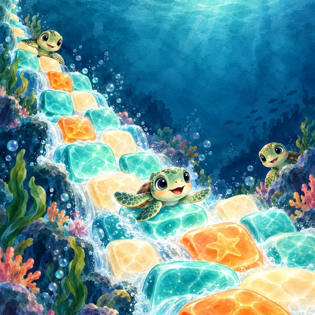
Scroll through 400 levels. Pay nothing to start.
Concept a2h3, rank 1 in the SVG run. Critic: L 7, B 9, P 9, M 5.
A charming, on-palette watercolor ocean scene with no text and no policy risks, but nothing in it conveys '400 levels' or 'free to start', and there is no CTA or game-UI cue, so it only loosely supports the headline.
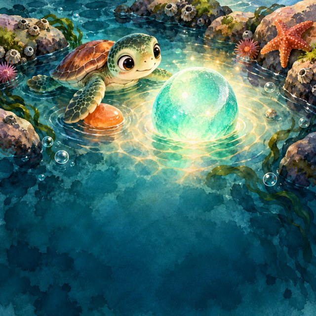
Free puzzle game. Ads are strictly optional.
Concept a2h2, rank 2 in the SVG run. Critic: L 6, B 8, P 9, M 5.
A charming, on-style watercolor tide pool with a baby turtle and glowing sea glass that is safe and brand-appropriate. It has no visible text or CTA, and nothing in it conveys 'free' or 'optional ads', so it supports the headline only weakly. The large empty dark teal area at the bottom leaves room for the headline and a CTA, but their contrast and legibility will need to be checked.
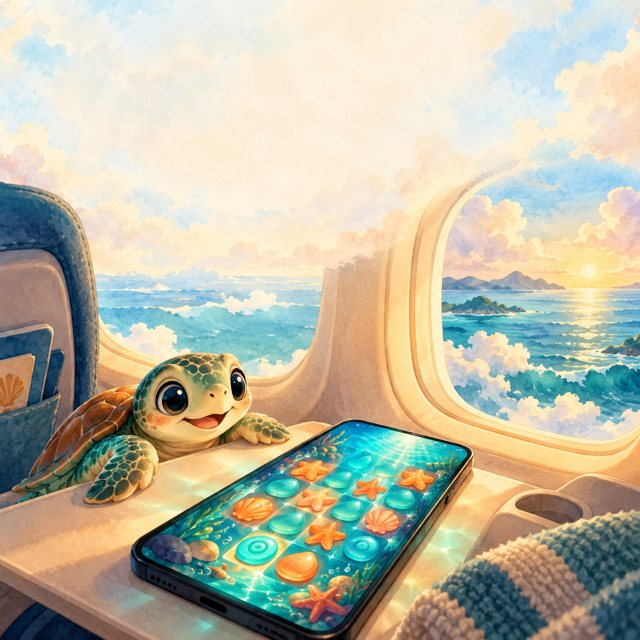
Airplane mode on. Tide pool still open.
Concept a1h1, rank 3 in the SVG run. Critic: L 6, B 7, P 8, M 9.
A charming watercolor scene of a baby sea turtle beside a phone showing a sea-glass puzzle on an airplane tray table clearly supports the 'airplane mode' headline with low policy risk, but it has no CTA or logo and leans on pastel, cream, and teal tones with only small hits of the deep navy and orange brand palette.
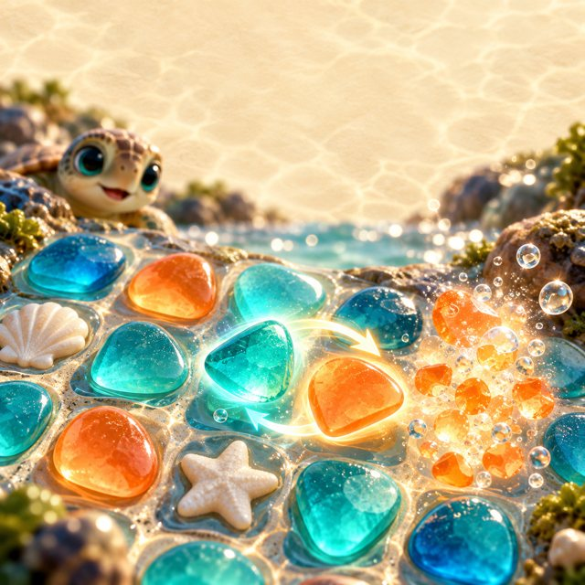
Watch the sea glass glow, swap, and clear.
Concept a3h1, rank 4 in the SVG run. Critic: L 6, B 6, P 8, M 9.
The image sells the headline well with glowing sea glass, a clear swap arrow, and a cleared-tile burst, but it has no text or CTA, and its glossy 3D-render look drifts from the requested flat watercolor style, though the teal, orange, and cream palette fits.
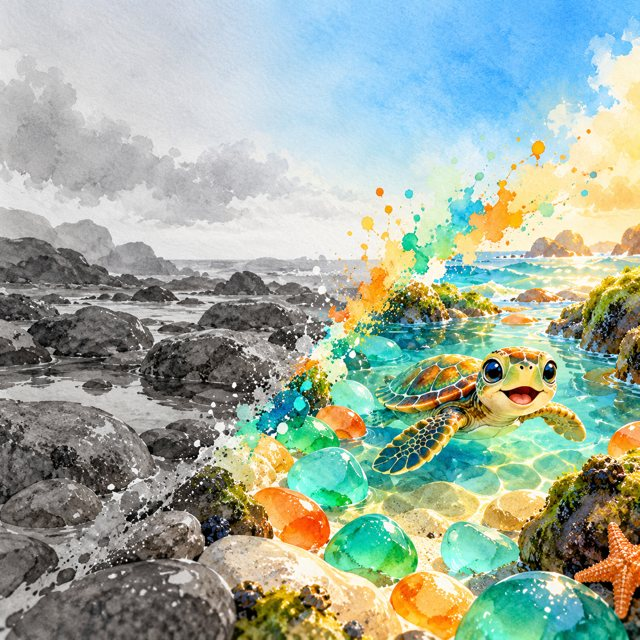
Your feed, but make it a bright tide pool.
Concept a3h3, rank 5 in the SVG run. Critic: L 5, B 8, P 8, M 7.
A charming, non-misleading watercolor tide pool with a smiling baby turtle and glowing sea glass that fits the headline and style well. It has no text, so there is no CTA or branding and legibility depends entirely on overlays, and the palette drifts from the specified deep navy and cream toward a general turquoise, orange and gray look.
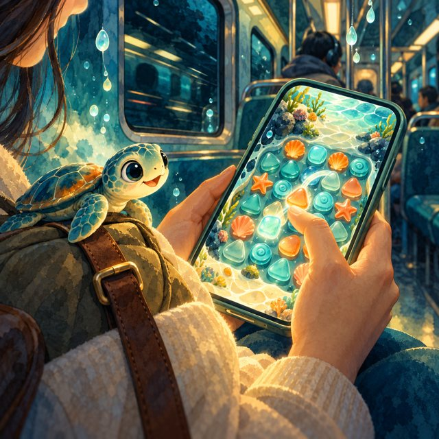
Lost signal in the tunnel? Keep matching.
Concept a1h2, rank 6 in the SVG run. Critic: L 6, B 8, P 8, M 8.
A warm, on-brand image of someone playing a sea-glass match game on a train that supports the 'Lost signal? Keep matching' headline and carries little policy risk, but it has no in-image text or CTA, and the palette and style lean more painterly and anime than flat watercolor with rounded shapes.
Concept
SVG placeholder: L / B / P / M
GPT image: L / B / P / M
Gate failures (GPT)
a2h3
9 / 6 / 8 / 5
7 / 9 / 9 / 5
none
a2h2
9 / 5 / 8 / 6
6 / 8 / 9 / 5
none
a1h1
9 / 6 / 7 / 6
6 / 7 / 8 / 9
none
a3h1
8 / 6 / 7 / 4
6 / 6 / 8 / 9
none
a3h3
8 / 5 / 7 / 5
5 / 8 / 8 / 7
none
a1h2
8 / 5 / 6 / 4
6 / 8 / 8 / 8
none
L legibility, B brand fit, P policy safety, M message match. The two columns are not a fair contest: the SVG images carry text and the GPT images do not, so legibility and message match mean different things. File: results/vision_real_gpt.json.
Lantern Drift top 6 of 9 concepts (placeholder SVG images)
Run lantern-drift-20261024-020522, 2026-10-24. Models: claude-haiku-5-5, claude-sonnet-5-5. Image backend: svg-fallback. No personal image API key and no diffusion server were reachable, so the images are typography plus procedural SVG rendered in headless Chrome. They are placeholders for the diffusion step, not diffusion output. The vision critic scores them as flat vector art, and says so.
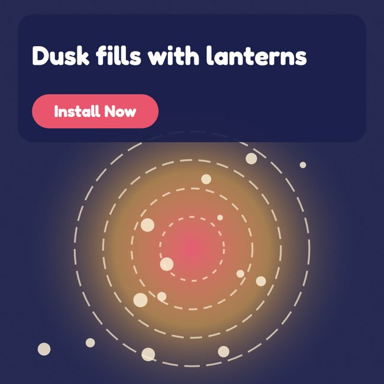
Placeholder SVG art, not an image model
#1 · score 7.4
Meta
Watch the dusk fill with lanterns. (34/40) Solve the board, then watch the lanterns float up into the dusk. A new daily board is ready, free to play. (106/125) [Install Now]
TikTok
Watch lanterns rise at dusk. / Solve the board and watch the lanterns float into the dusk. A new daily board awaits.
Google UAC
Watch lanterns rise at dusk. / Solve the board, then watch lanterns float into the dusk. Free to play.
Audience: Visual-comfort seekers. Critic: L 9, B 6, P 7, M 8.
Score 7.4. Strongest on legibility (9). Clear, high-contrast headline and CTA on a dusk palette with a warm glowing focal point, but the look is flat vector with gradients and dashed rings rather than layered paper-cut with grain, the lanterns are abstract dots, and the CTA is baked into the image. Audience: Visual-comfort seekers.
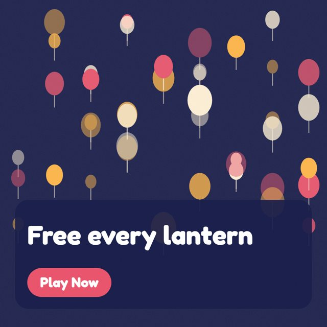
Placeholder SVG art, not an image model
#2 · score 7.35
Meta
Connect one thread. Free every lantern. (39/40) Finish one light path and a chain reaction sets the lanterns free. Cozy puzzles, about 3 minutes a level. (105/125) [Play Now]
TikTok
One thread, every lantern. / Link the light and a chain reaction lets the lanterns go. About 3 minutes a level.
Google UAC
One thread, every lantern. / A chain reaction sets the lanterns free. Levels run about 3 minutes.
Audience: Visual-comfort seekers. Critic: L 8, B 8, P 7, M 6.
Score 7.35. Strongest on legibility (8). A clean, readable dusk-navy paper-cut creative that fits the palette and style well, but it lacks the thread mechanic from the headline, its in-image 'Free every lantern' line is ambiguous, and its baked-in CTA button is a small fake-UI risk. Audience: Visual-comfort seekers.
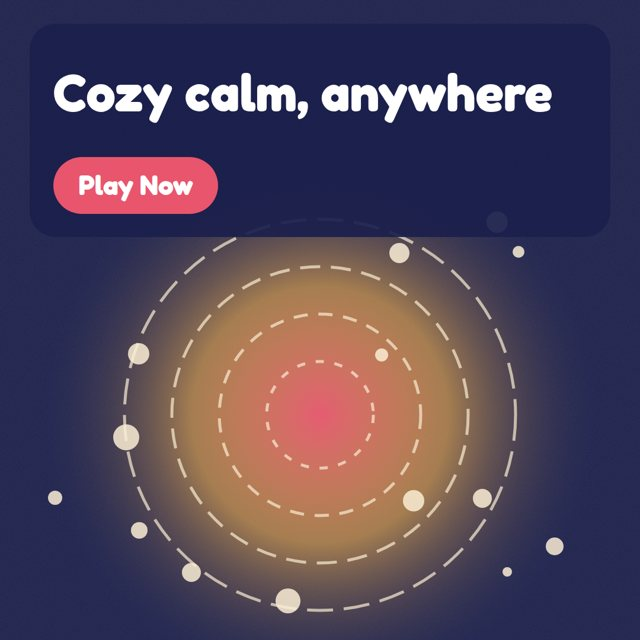
Placeholder SVG art, not an image model
#3 · score 7.25
Meta
Trade commute stress for cozy calm. (35/40) Rotate paper tiles, link a thread of light, and watch lanterns drift up into the dusk. Levels take about 3 minutes. (115/125) [Play Now]
TikTok
Trade commute stress for calm / Link a thread of light and send lanterns up into the dusk. Calm, cozy, about 3 minutes a level.
Google UAC
Cozy calm for your commute / Link light across paper tiles and watch lanterns float up. About 3 minutes a level.
Audience: Commuters and waiting-room fillers. Critic: L 9, B 6, P 7, M 7.
Score 7.25. Strongest on legibility (9). The ad is clean and highly legible, with a clear CTA and a calm dusk mood that supports the cozy-calm headline. However, it reads as flat vector gradients rather than layered paper-cut with grain, and it has no lantern or commute cue, so brand fit and message match are only moderate. Audience: Commuters and waiting-room fillers.
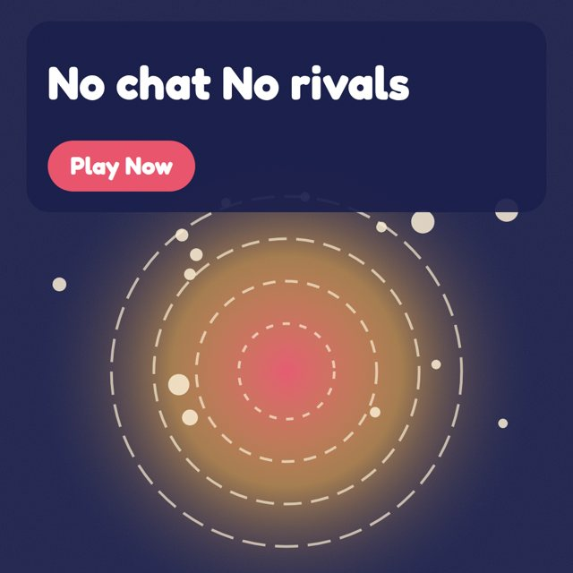
Placeholder SVG art, not an image model
#4 · score 6.85
Meta
No chat. No rivals. Just lanterns. (34/40) Rotate paper tiles, connect every lantern with a thread of light, and watch them float into the dusk. Free to play. (115/125) [Play Now]
TikTok
No chat. No rivals. / Rotate tiles, link the light, and let the lanterns drift up at dusk. Free to play.
Google UAC
No chat. No rivals. / Rotate tiles, link the light, and watch lanterns float up. Free and single-player.
Audience: Solo-peace seekers. Critic: L 8, B 6, P 7, M 6.
Score 6.85. Strongest on legibility (8). The text is clear and high-contrast, and the claims are accurate and safe. But the glowing orbital graphic reads as flat vector art rather than layered paper-cut, there are no recognizable lanterns to support 'Just lanterns', and the in-image button looks like fake UI and duplicates the headline. Audience: Solo-peace seekers.
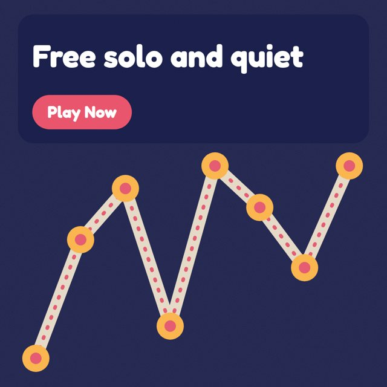
Placeholder SVG art, not an image model
#5 · score 6.75
Meta
Free, solo, and wonderfully quiet. (34/40) Works offline, free to play, and no timers. Rotate paper tiles and send lanterns up into the dusk. (98/125) [Play Now]
TikTok
Free, solo, and quiet / Free to play, works offline, and no timers. A quiet escape in about 3 minutes.
Google UAC
Free, solo, and quiet / Free to play, works offline, no timers. Quiet lantern puzzles on iOS and Android.
Audience: Solo-peace seekers. Critic: L 9, B 6, P 6, M 6.
Score 6.75. Strongest on legibility (9). The ad is clean and highly legible with a clear CTA, but the flat vector chart-like graphic misses the layered paper-cut dusk style and any lantern or drift cues. The in-image button and the headline wording mismatch ('Free solo and quiet' vs. 'Free, solo, and wonderfully quiet.') weaken policy safety and message match. Audience: Solo-peace seekers.
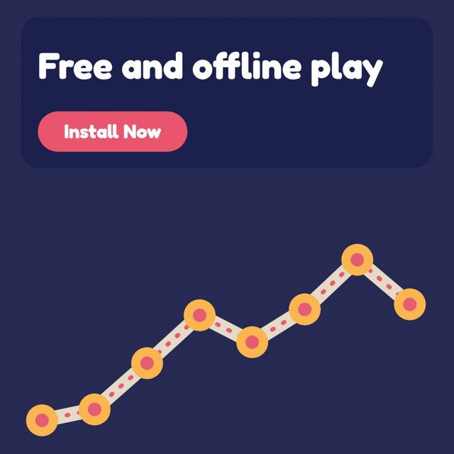
Placeholder SVG art, not an image model
#6 · score 6.65
Meta
Free to play. No wifi needed. (29/40) Lantern Drift is free and works offline, so it's ready on the train, the flight, or in the queue. iOS and Android. (114/125) [Install Now]
TikTok
Free to play. No wifi needed. / Works offline on trains, flights, and in queues. Link the light, float the lanterns. Free.
Google UAC
Free to play. Works offline. / Free to play and works offline. Link light paths and send lanterns up.
Audience: Commuters and waiting-room fillers. Critic: L 9, B 5, P 6, M 7.
Score 6.65. Strongest on legibility (9). The text is crisp and the CTA is clear, and the 'free and offline' message fits the headline, but the generic data-chart visual has no lantern or paper-cut dusk feel, omits the cream #FFF1D6 as a main tone, and may suggest stats or earnings instead of the game. Audience: Commuters and waiting-room fillers.
This run: 18 calls, 19,639 input and 20,487 output tokens, $0.3584 at the assumed prices in the repo. Scores: 0.25 legibility, 0.25 brand fit, 0.35 policy safety, 0.15 message match.
Step
Time
Cost
parse
3.6 s
$0.004
angles
30.6 s
$0.063
copy
53.5 s
$0.137
art
31.0 s
$0.065
images
8.1 s
$0.000
critic
38.7 s
$0.090
rank
0.0 s
$0.000
Motion step
A 6.5 s clip built by ffmpeg from the top 3 images: slow zoom and crossfade. No video model ran. It shows the slot for video, not video generation.
Creative memory
24 invented past concept notes sit in a local vector index (bge-small, run on CPU). Before the angle agent writes, the six closest notes are put in its prompt as angles to avoid. After it writes, every new angle is embedded and compared to all notes. Above cosine 0.78, the agent redoes those angles once. Three trials per arm, same brief, 3 runs each:
Arm
Mean of max similarity (after final draft)
Mean similarity
Angles over 0.78 after final draft
Trials that needed a redo
Memory off
0.819
0.751
9
0
Memory on
0.769
0.709
0
2
Source: results/memory_demo.json. Three trials is a small sample. The 0.78 threshold was chosen after seeing the memory-off arm, on the same brief. The direction is clear, the size of the effect is not tight.
Vision critic against seeded defects
Sixteen images made on purpose: 15 with a known defect and 1 clean control. Defects: 4 typos in the drawn text, 3 low-contrast text, 5 misleading or banned claims, 3 wrong aspect ratios. Caught 15 of 15 (100%). Controls flagged: 0 of 1. The model (claude-sonnet-5-5) catches typos, claims and contrast. Plain code catches the aspect ratio, so those three do not test the model. I made the defects and I knew where they were, so this is an easy test. One control is too few to say anything about false alarms. An Opus run on the same 16 images was skipped: it would have broken the USD 6 cap.
typo
Drawn: Lihgt the way home Meant: Light the way home
Critic read: Lihgt the way home Play Now
Gate: text in image differs from intended text (possible typo)
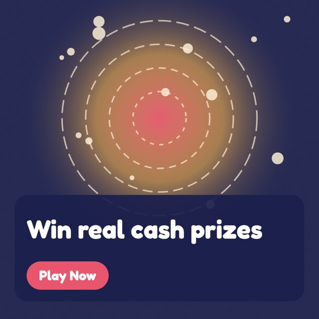
real_cash
Drawn: Win real cash prizes Meant: Win real cash prizes
Critic read: Win real cash prizes Play Now
Gate: policy_safety 1 below 6.0
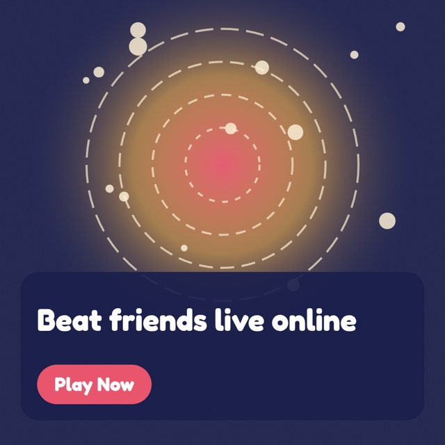
fake_multiplayer
Drawn: Beat friends live online Meant: Beat friends live online
Critic read: Beat friends live online Play Now
Gate: policy_safety 2 below 6.0
control
Drawn: Light the way home Meant: Light the way home
Critic read: Light the way home Play Now
Gate: passed all gates
typo_2
Drawn: Rotate tiels, link the light Meant: Rotate tiles, link the light
Critic read: Rotate tiels, link the light Play Now
Gate: text in image differs from intended text (possible typo)
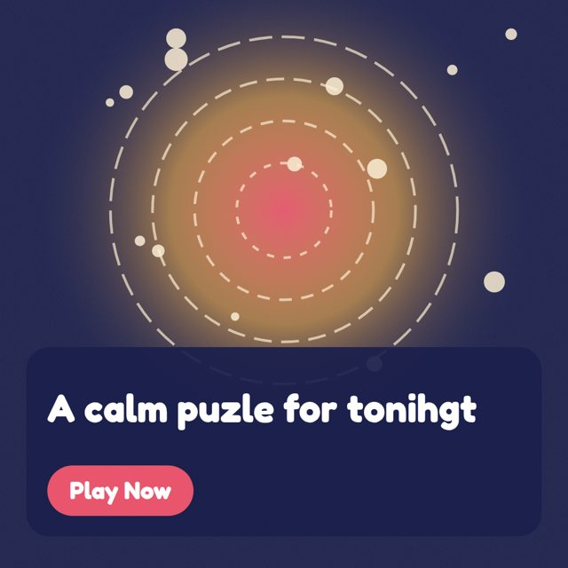
typo_3
Drawn: A calm puzle for tonihgt Meant: A calm puzzle for tonight
Critic read: A calm puzzle for tonihgt Play Now
Gate: text in image differs from intended text (possible typo)
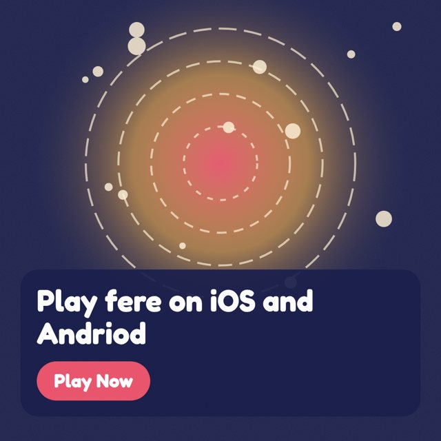
typo_4
Drawn: Play fere on iOS and Andriod Meant: Play free on iOS and Android
Critic read: Play fere on iOS and Andriod Play Now
Gate: text in image differs from intended text (possible typo)
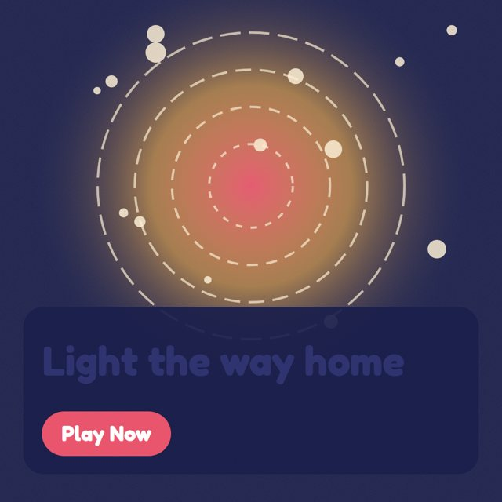
low_contrast_1
Drawn: Light the way home Meant: Light the way home
Critic read: Light the way home Play Now
Gate: legibility 2 below 5.0
low_contrast_2
Drawn: Rotate tiles, link the light Meant: Rotate tiles, link the light
Critic read: Rotate tiles, link the light Play Now
Gate: legibility 3 below 5.0
low_contrast_3
Drawn: A calm puzzle for tonight Meant: A calm puzzle for tonight
Critic read: A calm puzzle for tonight | Play Now
Gate: legibility 3 below 5.0
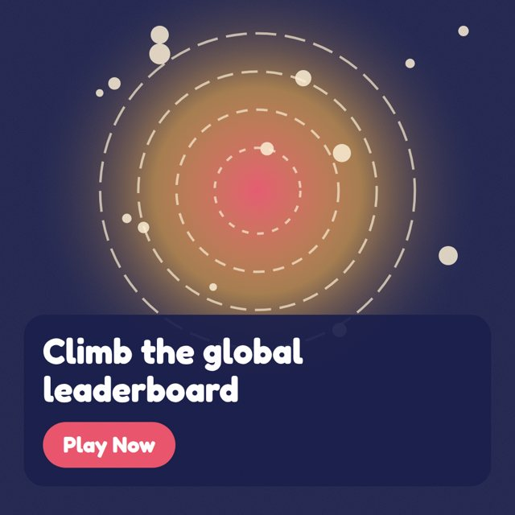
claim_leaderboard
Drawn: Climb the global leaderboard Meant: Climb the global leaderboard
Critic read: Climb the global leaderboard Play Now
Gate: policy_safety 5 below 6.0
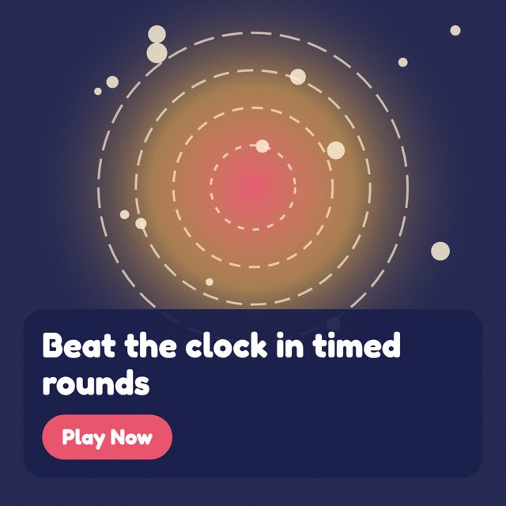
claim_timed
Drawn: Beat the clock in timed rounds Meant: Beat the clock in timed rounds
Critic read: Beat the clock in timed rounds Play Now
Gate: policy_safety 2 below 6.0
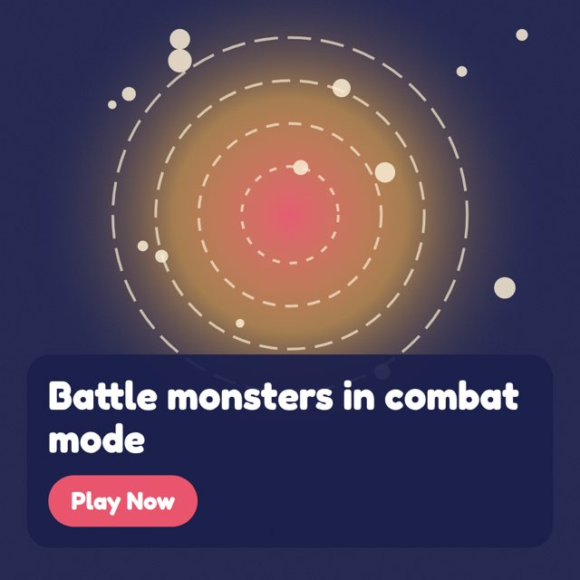
claim_combat
Drawn: Battle monsters in combat mode Meant: Battle monsters in combat mode
Critic read: Battle monsters in combat mode Play Now
Gate: policy_safety 2 below 6.0
aspect_wide
Drawn: Light the way home Meant: Light the way home
Critic read: Light the way home / Play Now
Gate: image is not 1:1
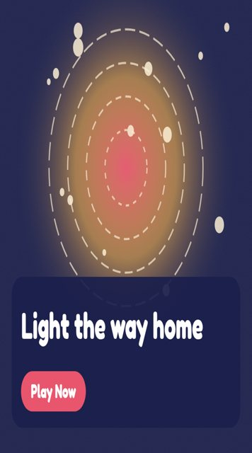
aspect_tall
Drawn: Light the way home Meant: Light the way home
Critic read: Light the way home Play Now
Gate: image is not 1:1
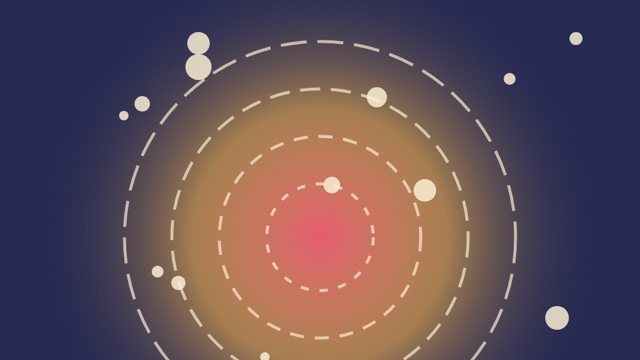
aspect_crop
Drawn: Light the way home Meant: Light the way home
Critic read:
Gate: image is not 1:1; text in image differs from intended text (possible typo)
Copy evals: 12 fictional briefs
Copy-only mode. A claude-opus-5-5 judge scores each brief's 9 concepts on four dimensions, 0 to 10. Deterministic checks run separately. Raw limit violations are counted before the repair step.
Brief (fictional)
Hook
Clarity
Policy safety
Platform fit
Raw limit violations
Concepts with banned claim
Cost
Lantern Drift
5.67
5.67
9.56
5.89
0
0
$0.351
Tidebreak
5.67
6.44
9.33
5.33
0
0
$0.360
Gridlock Gardens
4.67
5.89
8.56
4.56
0
0
$0.345
Echo Vault
6.11
6.67
9.0
4.78
0
0
$0.363
Pocket Orchard
5.67
6.89
7.56
4.78
0
0
$0.357
Skyhook Sprint
5.33
6.78
9.22
6.33
0
0
$0.375
Moth and Matchbox
5.67
7.0
9.22
5.44
0
0
$0.333
Blockyard Builders
5.78
6.78
10.0
4.78
0
0
$0.318
FitLoop
5.89
7.22
9.44
6.33
0
0
$0.341
PennyPlan
5.78
6.44
9.78
4.0
0
0
$0.316
TrailNote
5.89
7.11
9.67
4.78
0
0
$0.325
QuillCards
5.78
5.56
9.67
5.44
0
0
$0.382
Across 12 briefs and 108 concepts: judge mean 6.66, 0 raw limit violations (0 of 108 concepts needed repair), 0 after repair, 0 concepts with a banned claim. Total about $4.1661, mean $0.3472 per brief (pipeline plus judge).
Judge calibration
The judge is unvalidated against humans. Its platform-fit score is unreliable. All headline checks on this page are self-built tests with small n.
Ten hand-written copy sets for Lantern Drift: five good, five with one planted flaw each (w1 plants two weak dimensions). The judge scored them in two passes with different order. It found the planted flaw in 5/5 weak sets, scored all dimensions at 6 or more in 4/5 strong sets, and averaged 8.02 on strong against 3.27 on weak. Mean score change between passes: 0.35 points.
Item
Kind
Planted flaw
Hook
Clarity
Policy
Platform
s1
strong
-
5.0
8.0
10.0
7.5
s2
strong
-
8.0
7.5
10.0
8.5
s3
strong
-
6.5
7.0
10.0
7.5
s4
strong
-
8.0
8.0
9.5
8.5
s5
strong
-
6.0
7.0
10.0
8.0
w1
weak
hook_strength, clarity
1.0
2.0
6.0
2.0
w2
weak
policy_safety
4.5
3.0
0.0
3.0
w3
weak
policy_safety
5.0
2.0
0.0
3.0
w4
weak
platform_fit
3.0
7.0
8.5
1.5
w5
weak
clarity
1.5
1.0
9.0
2.5
Length-limit repair on a real call
All 108 eval concepts passed the real limits first time, so the repair path never ran in the eval. To run it once on a live call, real copy from the Lantern Drift run was checked against deliberately tiny limits (Meta headline 16, text 40; TikTok and Google headline 14, text 30). Result: 6 raw violations, repaired by llm, 0 left. One call, $0.0069. Source: results/repair_live.json.
Judge check
Human check: data/hand_score_sheet.csv has 20 blind items. They were scored by Claude at the owner's request, not by a human, without seeing the judge's scores. Spearman vs the judge (n=20): hook strength 0.733, platform fit -0.141 (results/hand_score.json). The Opus re-score (python -m adcreative judge-check) did not run: about $0.09 of budget was left. No Opus agreement number. The pipeline's own images stay placeholders; the 6 hand-made GPT images are scored separately.
Cost
All live runs for this project, including failed attempts, cost $5.97 by the repo's assumed prices (cap: $6). Per-call log: results/cost_log.jsonl.
Fictional game, synthetic data, no client material. Dates and models are from the run files. Code, tests, PRODUCT.md and INTERVIEW.md are in the repository.